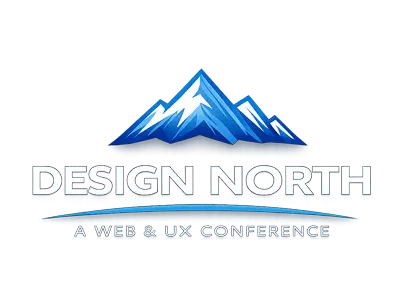
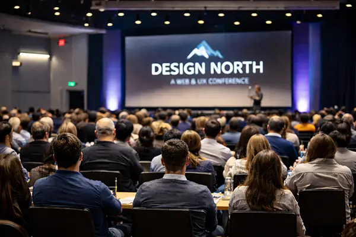
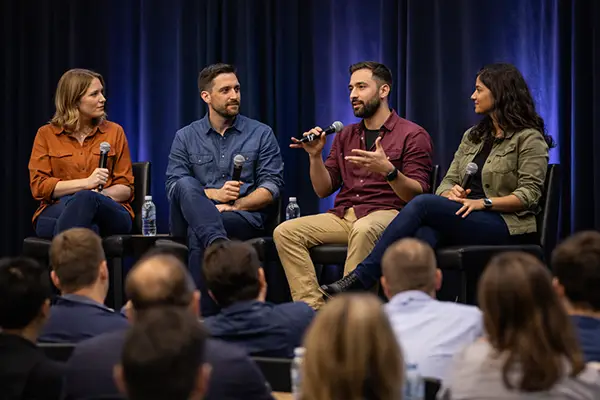

Thursday, May 14
The day begins with doors opening at 9:00 AM, followed by the opening keynote at 10:00 AM. Morning sessions and talks lead into afternoon workshops, and the day concludes with an evening networking event.

May 14–16, 2026
Contemporary Calgary, Calgary, Alberta
Design North 2026 is a three-day conference focused on modern web development, user experience (UX) design, and the evolving relationship between content, interface, and technology. The event brings together designers, developers, strategists, and students from across Western Canada to explore how thoughtful digital design shapes real-world outcomes. Taking place in Calgary, Alberta, Design North emphasizes practical insight, shared learning, and conversations grounded in real projects rather than trends alone. Sessions explore how UX and UI decisions influence accessibility, performance, and long-term maintainability.

January 29, 2026
May 14–16, 2026
Contemporary Calgary
Calgary, Alberta
Web designers, UX designers, UI designers,front-end developers, content strategists, product designers, students, educators, and digital teams.
| Registration Type | Access Level | Cost |
|---|---|---|
| Student Pass | Full conference access | Free |
| Professional Pass | Full conference access | $295 |
| Workshop Add-on | Selected workshops only | $75 |
Student passes require valid full-time student identification at check-in.
Design North 2026 features a mix of talks, hands-on workshops, and panel discussions focused on real-world digital design challenges. Topics range from foundational UX principles to emerging tools and workflows used in professional practice.
Sessions include discussions on accessibility, responsive layouts, accessible HTML, maintainable CSS, design systems, content strategy, and collaboration between design, development, and QA teams. Free admission is available for full-time students with valid identification.
The conference experience includes keynote presentations, focused breakout sessions, and interactive workshops led by industry professionals. Attendees can expect live design demos, practical case studies, collaborative sessions, and opportunities to connect with peers across disciplines working in web, UX, and UI roles.
The day begins with doors opening at 9:00 AM, followed by the opening keynote at 10:00 AM. Morning sessions and talks lead into afternoon workshops, and the day concludes with an evening networking event.
Friday opens with a morning panel discussion, followed by concurrent breakout sessions. Hands-on workshops run throughout the day, ending with a closing keynote in the late afternoon.
The final day starts with optional workshops, transitions into community-led discussions, and wraps up by early afternoon.
Design North 2026 brings together speakers from digital agencies, in-house product teams, and independent studios across Canada. Speakers represent a range of disciplines including UX design, front-end development, content strategy, accessibility, and product design.
Senior UX Designer, Product Team
Alex works on large-scale digital platforms with a focus on accessibility, research-driven design decisions, and inclusive user experiences.
Front-End Developer & Design Systems Lead
Priya specializes in bridging the gap between design and development, with a focus on maintainable CSS and scalable systems.
Digital Product Consultant
Jordan helps organizations align business goals with user needs through content strategy and information architecture.
UX Researcher & Workshop Facilitator
Mei focuses on qualitative research and translating insights into actionable design improvements.
Independent Web Designer
Ryan works with startups and small teams to build accessible, performance-focused websites.

Contemporary Calgary is a fully accessible venue with step-free access, elevators, and accessible washrooms throughout the building.
The venue is located near public transit and offers nearby paid parking options. Accessibility support and QA testing considerations are part of all workshop planning.
For general inquiries, accessibility questions, or student registration details, contact the conference team at info@designnorthconf.ca
For updates, speaker announcements, and registration details, visit the official conference website or follow Design North on social media.